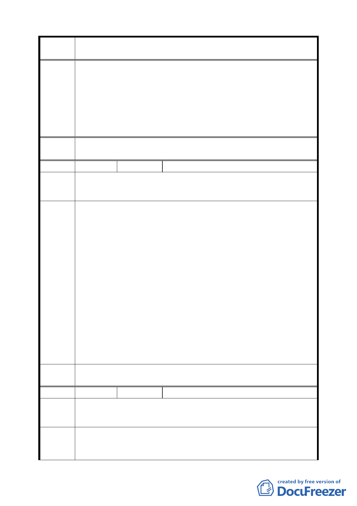

案 名 配合第二代展會中心變更臺北市南港經貿園區特定專用區 C12、
C13 街廓商業區及周邊商業區細部計畫案
(二)地下室開挖率：
地下室開挖率放寬上限為 30%，以此值為 X 代入公式(1)
計算，即為申請核准可增加之值。
二、增加容積實質獎勵：
除可再適用都市更新相關獎勵外，其移轉獎勵容積率之上限
提高為 30%，以此值為 X 代入公式(1)計算，即為申請核准可
增加之值。
委員會
決議
本地區已提高更新地區整併之容積獎勵，可達繁榮周邊之效。
編號 ８
陳情人 陳澄雄、王澤光
陳 情 理 陳情放寬南港經貿園區第二代展會中新細部計畫中，有關地區編
由 號 A 土地之容積移轉獎勵門檻與可移轉範圍。
1. 有關 96 年 12 月 18 日臺北市都市計畫委員會第 577 次會議中，
決議放寬地區編號 A 土地移轉之容積獎勵值為 25%，我等陳情人
均對 貴會體恤民情，銘感於心。
2. 然據瞭解其規定須以地區編號 B、C 與 A 街廓全部整併開發始得
適用 25%之容積獎勵，在都市更新實務上，相當困難；另有關建
蔽率與地下室開挖率等是否適宜放寬，陳情 貴會參酌我等於 12
建議辦
法
月 14 日之陳情內容卓予調整。
考量地區編號 A 土地係配合政府重大建設計畫之特殊案例，規定
「限定範圍」移轉，雖給予容積獎勵，以提高接受街廓權利關係
人之整併辦理都市更新之誘因，然地區編號 B、C 街廓範圍內權利
關係人人數眾多，且地區編號 A 土地內產權錯綜複雜，整合極為
不易（甚早之前即曾整合辦理合建未能成功），是否請 貴會考量
放寬地區編號 A 土地之「可移轉範圍」，非僅限定於地區編號 B 與
C 街廓，使地區編號 A 土地之允建容積能於交易市場中反應其實
際價值。
委 員 會 同委員會決議一、二、三。
決議
編號 ９
陳情人 王澤光
陳 情 理 以地區編號 A 之允建容積集中移轉設置於 B、C，恐因 B、C 原有
由 地主及住房者反彈或分配及整合等問題而滯礙難行。
建議將 A 區允建容積除可轉設置於 B、C 區外，同時放寬亦可開放
建議辦
法
移轉設置臺北市內其他地區，以期盡早完成 A 區延伸綠地門面計
劃之完成。
9